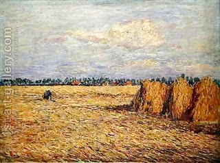

Pesachim 40 - What not to do on Passover
There are some innocuous acts that may nevertheless lead to leavening, and they are therefore prohibited on Passover. One should not soak bran for chicken, and of course one should not soak the actual grain. Some say that the bran itself leavens, while others - that the problem is with the small portions of the grains adhering to the bran.
A woman should not soak bran to use it as a cleaning agent when going to the baths. She may, however, rub it on the dry skin. Similarly, one should not chew grains of wheat and place them on his wound for cure - because this creates chametz.
If so, how is one to behave? Here are the rules that tell us when leavening can no longer occur: If one baked, cooked, or scalded grain in hot water, then this is completely safe on Passover.
Can one add flour to a pot that's cooking already? Some say that one must then immediately add vinegar, which stops the leavening process, but some completely allow this.
Art: Flat Landscape with Harvested Grain Field by Paul Baum